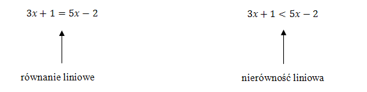
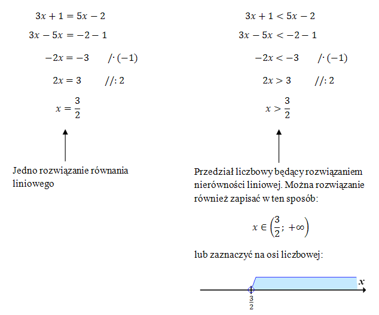

Nierówności liniowe
Przed nauką tego tematu, warto dobrze zrozumieć metodę rozwiązywania równań liniowych.
Czym różni się równanie liniowe od nierówności liniowej?
W równaniach liniowych występuje znak równości (\(=\)), natomiast w nierównościach liniowych występuje jeden ze znaków nierówności (\(\lt , \le , \ge , \gt\)). Równanie liniowe ma najczęściej jedno rozwiązanie.
Dla nierówności liniowych rozwiązaniem jest zazwyczaj przedział liczbowy.

Uwaga
Nierówności liniowe rozwiązujemy praktycznie tak samo jak równania liniowe. Jedyna różnica polega na tym, że gdy mnożymy lub dzielimy nierówność stronami przez liczbę ujemną, to zmieniamy znak nierówności (tak jak w powyższym przykładzie).Zbiorem wszystkich rozwiązań nierówności \(x\sqrt{3}+4\ge
2x+\sqrt{12}\) jest przedział
A.\( (-\infty ,2) \)
B.\( (-\infty ,2 \rangle \)
C.\( \langle 2,+\infty ) \)
D.\( (2,+\infty ) \)
B
Zbiorem wszystkich rozwiązań nierówności \(\frac{1-2x}{2}\gt \frac{1}{3}\) jest
przedział
A.\( \Biggl( \frac{1}{6}, +\infty \Biggl) \)
B.\( \Biggl( \frac{2}{3}, +\infty \Biggl) \)
C.\( \Biggl( -\infty ,\frac{1}{6} \Biggl) \)
D.\( \Biggl( -\infty ,\frac{2}{3} \Biggl) \)
C
Najmniejszą liczbą całkowitą spełniającą nierówność \(\frac{x}{2}\le \frac{2x}{3}+\frac{1}{4}\) jest
A.\( -2 \)
B.\( -1 \)
C.\( 0 \)
D.\( 1 \)
B
Największą liczbą całkowitą spełniającą nierówność \((4 + x)^2
\lt (x - 4)(x + 4)\) jest
A.\( -5 \)
B.\( -4 \)
C.\( -3 \)
D.\( -2 \)
A
Wskaż przedział, który jest zbiorem rozwiązań nierówności \(\frac{x}{4}+\frac{1}{6}\lt \frac{x}{3}\)
A.\( (-\infty, -2) \)
B.\( (-\infty, 2) \)
C.\( (-2, +\infty) \)
D.\( (2, +\infty) \)
D
Wskaż przedział, który jest zbiorem rozwiązań nierówności \(\frac{2}{3}-\frac{3x}{5}\lt 7\)
A.\(\textstyle (-\infty, -10\frac{5}{9}) \)
B.\(\textstyle (-\infty, 10\frac{5}{9}) \)
C.\(\textstyle (-10\frac{5}{9}, +\infty) \)
D.\(\textstyle (10\frac{5}{9}, +\infty) \)
C
Wskaż przedział, który jest zbiorem rozwiązań nierówności \(x-\frac{7x}{8}\lt \frac{x}{4}\)
A.\( (-\infty, 0) \)
B.\( (-\infty, 1) \)
C.\( (0, +\infty) \)
D.\( (1, +\infty) \)
C
Najmniejszą liczbą całkowitą należącą do zbioru rozwiązań nierówności
\(\frac{3}{8}+\frac{x}{6}\lt \frac{5x}{12}\) jest
A.\( 1 \)
B.\( 2 \)
C.\( -1 \)
D.\( -2 \)
B
Wskaż rysunek, na którym przedstawiony jest zbiór rozwiązań nierówności \(2(3 − x) > x\). 
D
Zbiorem rozwiązań nierówności \(\frac{2-x}{3}-\frac{2x-1}{2} \lt x \) jest
przedział
A.\( \left ( -\infty ,\frac{1}{2} \right) \)
B.\( \left ( -\infty ,\frac{1}{14} \right) \)
C.\( \left ( \frac{1}{14},+\infty \right) \)
D.\( \left ( \frac{1}{2},+\infty \right) \)
D
Zbiorem rozwiązań nierówności \(ax+4\ge 0\) z niewiadomą \(x\) jest przedział
\((-\infty ,2 \rangle\). Wyznacz \(a\).
\(a=-2\)
Ile liczb całkowitych \(x\) spełnia nierówność \(\frac{2}{7}\lt \frac{x}{14}\lt
\frac{4}{3}\)?
A.\( 17 \)
B.\( 16 \)
C.\( 15 \)
D.\( 14 \)
D
Zbiór wszystkich liczb rzeczywistych spełniających nierówność
\(\frac{3}{5}-\frac{2x}{3}\ge \frac{x}{6}\) jest przedziałem
A.\( \left \langle \frac{9}{15}, +\infty \right ) \)
B.\( \left ( -\infty , \frac{18}{25} \right \rangle \)
C.\( \left \langle \frac{1}{30}, +\infty \right ) \)
D.\( \left ( -\infty , \frac{9}{5} \right \rangle \)
B
Najmniejszą liczbą całkowitą spełniającą nierówność \(2(x − 2) \le 4(x −1)+1\) jest
A.\( -2 \)
B.\( -1 \)
C.\( 0 \)
D.\( 1 \)
C
Wskaż największą liczbę całkowitą spełniającą nierówność \(\frac{x}{4}-\sqrt{3}\lt
0\).
A.\( 5 \)
B.\( 6 \)
C.\( 7 \)
D.\( 8 \)
B